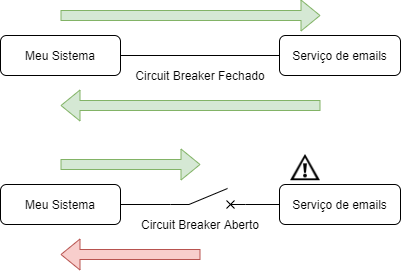

Élysson MR - Squad Pagamentos Ecomm
Exemplo1: Usamos um serviço de envio de emails para nossos clientes, porém ele esta retornando muitos timeouts.
Exemplo2: Precisamos processar os pagamentos das assinaturas, mas o serviço principal (mais barato) está com problemas . Para não ficar muito tempo sem vender ($$$), vamos utilizar outro serviço (mais caro) como backup por um tempo ($$).
Slack: @elysson.rezende